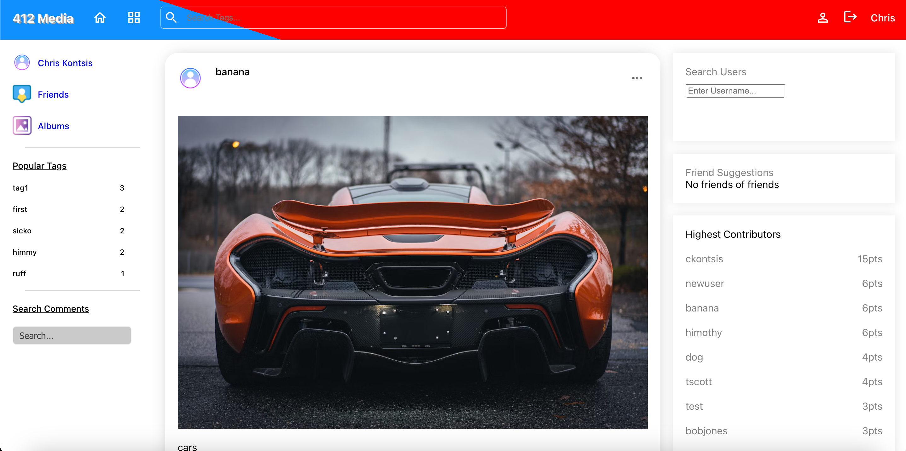
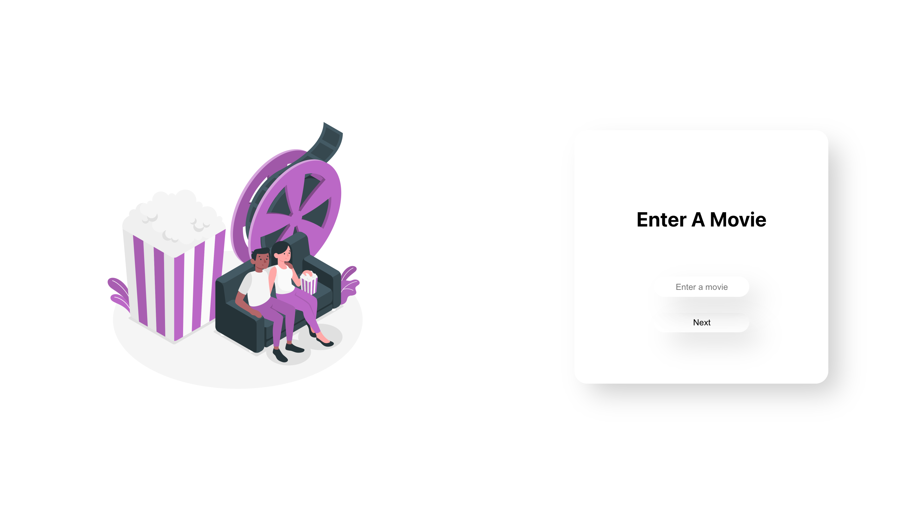

My Projects
-

Social Media Application
React, Sass, Express, Node.js, Postgresql
Developed a full stack social media application using React and Sass for the frontend. Designed and Integrated a Postgresql datbase to store and efficiently manage user information. Connected the frontend to the database with Express and Node.js
-

Movie Guide
REACT, BOOTSTRAP, JSX, mdbAPI
Developed an application that allows the user to input any movie they are interested and it will a list with the specified movie along with related films. Once the user clicks the film they're interested in, another API call is make which displays all the critics ratings for that film.